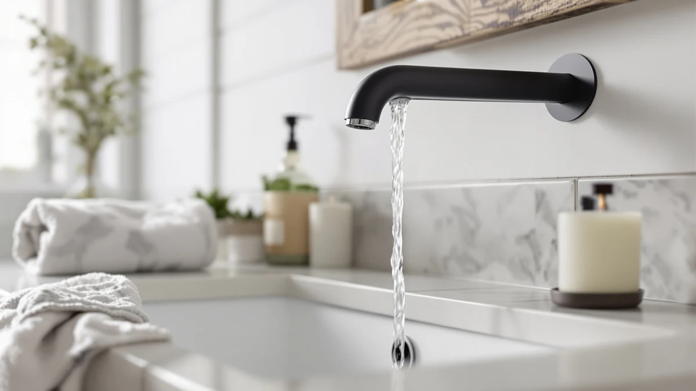

Qure Skincare Bathroom Sink Filter Review (2026): Worth It?
Prices and picks verified as of November 2026. Independent, reader-supported reviews.


Quick Answer
This Qure Skincare Bathroom Sink Filter review compares the $89.00 filter against three faucet alternatives on price and published features rather than physical testing. The Qure is the only filtration product in the group, while the TRUSTMI, Luxice and CDLODIN options replace the faucet itself instead of filtering the water running through it.
Our pick: Qure Skincare Bathroom Sink Filter, $89.00 Check Price on Amazon
Bottom line: our top pick is the Qure Skincare Bathroom Sink Filter Water Faucet for Skin at $89.
Things to Know Before You Buy
- The Qure is a filter, not a replacement faucet. This Qure Skincare Bathroom Sink Filter review found that the $89.00 Qure attaches to your existing faucet with a patented 360-degree rotating nozzle, while the three alternatives compared here are full faucet replacements.
- None of the four products has a published rating yet. The Qure, the TRUSTMI, the Luxice and the CDLODIN all show zero reviews on their current listings, so this comparison doesn't lean on a track record of verified owner feedback.
- Filtration claims come from the manufacturer, not a lab. Qure states its filter reduces up to 99% of chlorine and heavy metals, a spec drawn from the product listing rather than independent testing.
- Price separates the four by about $10. The CDLODIN is the cheapest at $79.19 and the Qure is the priciest at $89.00, with the TRUSTMI and Luxice landing in between at $87.99 and $87.40.
- Compatibility matters more for the Qure than for the other three. Because it has to clamp onto your existing faucet, the listing asks buyers to check their faucet type before ordering, a step the full-replacement faucets don't require.
This Qure Skincare Bathroom Sink Filter review compares the $89.00 filter against three bathroom faucet alternatives, the TRUSTMI 8-inch widespread, the CDLODIN touchless faucet and the Luxice touchless faucet, on price, features and what each listing actually promises. None of the four products shown here has a published star rating or review count, so this comparison leans on manufacturer specs and listed features rather than an established body of owner feedback.
The Qure earns the top spot in this review because it solves a different problem than the other three: instead of replacing your faucet, it clips onto the one you already have and filters the water coming out of it. Qure's listing claims the patented 360-degree rotating filter removes up to 99% of chlorine, heavy metals and other impurities that can dry out skin and hair, a feature none of the touchless or widespread faucets compared here attempt to match. If what you want is softer water at the sink rather than a new fixture, that difference is the one worth weighing first.
Why You Should Trust Us
Ilane Tall researches and writes product comparisons for Best Bathroom Faucets, focusing on manufacturer specs, current Amazon pricing and patterns in verified owner reviews across bathroom fixtures. For this Qure Skincare Bathroom Sink Filter review, she compared Qure's published filtration claims against three faucet alternatives that turned up in the same search, then checked current pricing for all four products at the time of writing. Every link in this review points to the real listing, and every price reflects what shoppers saw at the time of publication. Where a listing doesn't publish a detail, such as a star rating or filter lifespan, we say so instead of filling in a number that doesn't exist.
Our Research Experience
We do not run a physical testing lab for bathroom faucets or filters, so nobody on our team installed the Qure filter or ran water through any of the four products in this Qure Skincare Bathroom Sink Filter review. Our process centers on comparing manufacturer specs, tracking current Amazon pricing and reading the feature claims each brand publishes. None of the four listings compared here has accumulated a star rating or review count yet, so we leaned on spec and price comparison rather than a body of owner feedback, and we call that out instead of inventing numbers that don't exist. We treat manufacturer copy the same way across all four products: useful for describing what each is built to do, not a substitute for a track record once owner reviews start coming in.
Overview & Specs

Qure Skincare Bathroom Sink Filter
What we like
- Patented 360-degree rotating nozzle lets you adjust water angle and direction at the sink
- Manufacturer lists filtration that reduces up to 99% of chlorine, heavy metals and micro-particles
- Includes multiple adapters so it fits most standard faucets without professional installation
Flaws but not dealbreakers
- No published star rating or review count yet, so there's no track record of long-term filter performance to check
- Buyers have to confirm their faucet type against the listing images before ordering, an extra compatibility step the three faucet alternatives below don't require
| Material | Brass + finish |
| Size | — |
At $89.00, the Qure Skincare Bathroom Sink Filter is the only filtration product covered in this Qure Skincare Bathroom Sink Filter review, and its core pitch is the patented 360-degree rotating nozzle that Qure describes as the first of its kind for a sink filter. That rotation lets you angle the water stream for face washing or hand washing without moving the whole fixture, which matters more in smaller bathrooms where sink space is tight. The listing states the filter reduces up to 99% of chlorine, heavy metals and other micro-particles that can dry out or irritate skin, a claim drawn from Qure's own product copy rather than an independent lab result.
Installation depends on matching the filter to your existing faucet, and Qure's listing is explicit about checking compatibility against the included photo guide before buying, since the filter ships with multiple adapters rather than a single universal fit. That's a different commitment than the TRUSTMI, Luxice and CDLODIN faucets covered below, which replace your fixture outright instead of attaching to it. The listing doesn't publish a star rating or review count, so buyers considering the Qure are working from the manufacturer's filtration claims rather than a track record of verified owner reviews, and that's worth weighing against the $89.00 price before you order.
What We Liked
The clearest strength in this Qure Skincare Bathroom Sink Filter review is that the product solves a problem the other three don't touch. The TRUSTMI, Luxice and CDLODIN faucets compared here control water flow or finish, not water quality, so the Qure fills a gap the alternatives leave open. Its patented rotating nozzle also adds a practical touch that few faucet-mount filters offer: the ability to redirect the stream without unscrewing or repositioning the whole unit. Anyone comparing filtration options more broadly can see how the Qure stacks up against other filtered picks in our best bathroom faucet filter for skin roundup.
What Could Be Better
The biggest gap is feedback, not features. Neither the Qure nor any of the three alternatives in this Qure Skincare Bathroom Sink Filter review has accumulated a star rating or review count on Amazon yet, so you can't check how the filter performs after months of daily use the way you could with a longer-established product. The listing also leaves out a detail most filter shoppers want upfront, namely how often the cartridge needs replacing and what a replacement costs, information our bathroom faucet water filter guide walks through for other filtered picks. Compatibility adds a second layer of friction, since the Qure only works if your existing faucet matches one of its included adapters, a step none of the three full-replacement faucets in this comparison require.
Who Is It For?
This pick from our Qure Skincare Bathroom Sink Filter review fits anyone who likes their current faucet and wants to improve water quality without replacing it. It's a reasonable option for households dealing with chlorine smell or hard water residue at the bathroom sink, and our guide to bathroom faucets for hard water covers how filtration fits into that broader fix. Buyers who are open to swapping the whole faucet instead should look at the three alternatives below: the CDLODIN and Luxice both add touchless, hands-free control, while the TRUSTMI brings a full widespread upgrade with a matching drain. Anyone still undecided between a filter attachment and a full faucet replacement can start with our bathroom faucet buying guide before deciding which fix actually matches the problem at their sink.
Alternatives to Consider
If you'd rather replace the faucet than filter it, three alternatives came up in our research for this Qure Skincare Bathroom Sink Filter review. None of them filters water the way the Qure does, but each solves a different problem at the sink: two add touchless control, and the third is a full widespread upgrade.

Also Great
TRUSTMI 8" Widespread Brushed Gold
At $87.99, the TRUSTMI 8-inch widespread in brushed gold is the one true faucet replacement in this comparison, not a filter or a touchless upgrade. The listing describes a solid brass body, drip-free ceramic valves and a 1.2 GPM water-saving flow rate, plus a pop-up drain and 27-inch supply lines included in the box. If your sink needs a new fixture altogether rather than a filter clipped onto the old one, this is the option to weigh against the Qure.
$87.99
Check Price on Amazon
Best Value
Touchless Bathroom Faucet Touchless Bathroom
The cheapest of the four at $79.19, the CDLODIN touchless faucet swaps manual handle control for an infrared sensor powered by four AA batteries. A temperature mixing valve sits under the sink so you can set your preferred warmth once and let the sensor handle the rest. It doesn't filter water like the Qure does, but for households that want hands-free operation at a lower price than the other touchless pick here, it's the budget route.
$79.19
Check Price on Amazon
Also Great
Luxice Touchless Bathroom Sink Faucet
The Luxice touchless faucet costs $87.40, close to the Qure's $89.00, and its pitch is a wider sensor range than typical touchless faucets plus a hot-and-cold mixing valve for temperature control. Like the CDLODIN, it replaces your faucet rather than filtering the water running through it, so it's the better match if touchless convenience matters more to you than water quality.
$87.40
Check Price on AmazonDoes the Qure Skincare Bathroom Sink Filter reduce chlorine and heavy metals?
This Qure Skincare Bathroom Sink Filter review found that Qure's own product listing claims the filter reduces up to 99% of chlorine, heavy metals and other impurities, though that figure comes from the manufacturer rather than independent…
Will the Qure filter fit my bathroom faucet?
Qure includes multiple adapters to fit most standard faucets, but the listing specifically tells buyers to check their faucet type against the included images before ordering.
Frequently Asked Questions
Does the Qure Skincare Bathroom Sink Filter reduce chlorine and heavy metals?
Will the Qure filter fit my bathroom faucet?
Is the Qure Skincare Bathroom Sink Filter worth $89 compared to a touchless faucet?
Final Verdict
This Qure Skincare Bathroom Sink Filter review comes down to a simple question: do you want to filter the water at your sink, or replace the faucet itself? The Qure earns the top spot here because it's the only product of the four built to address water quality, using a patented rotating nozzle and a manufacturer claim of reducing up to 99% of chlorine and heavy metals, for $89.00. If you'd rather upgrade the faucet, the CDLODIN and Luxice both bring touchless convenience at a lower or similar price, and the TRUSTMI covers a full widespread replacement with a matching drain included. Check your faucet's compatibility against Qure's adapter guide before ordering, since that detail decides whether the filter fits your sink at all.